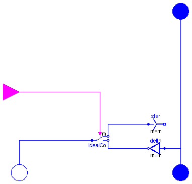

| Name | Description |
|---|---|
| Voltage-Frequency-Controller | |
| Y-D-switch | |
| terminal box Y/D-connection |
 Modelica.Electrical.Machines.Examples.Utilities.VfController
Modelica.Electrical.Machines.Examples.Utilities.VfController

| Type | Name | Default | Description |
|---|---|---|---|
| Integer | m | 3 | number of phases |
| Voltage | VNominal | nominal RMS voltage per phase [V] | |
| Frequency | fNominal | nominal frequency [Hz] | |
| Angle | BasePhase | 0 | common phase shift [rad] |
block VfController "Voltage-Frequency-Controller"
extends Modelica.Blocks.Interfaces.SIMO(final nout=m,
u(redeclare type SignalType = Modelica.SIunits.Frequency),
y(redeclare type SignalType = Modelica.SIunits.Voltage));
constant Real pi=Modelica.Constants.pi;
parameter Integer m=3 "number of phases";
parameter Modelica.SIunits.Voltage VNominal "nominal RMS voltage per phase";
parameter Modelica.SIunits.Frequency fNominal "nominal frequency";
parameter Modelica.SIunits.Angle BasePhase=0 "common phase shift";
output Modelica.SIunits.Angle x(start=0, fixed=true) "Integrator state";
output Modelica.SIunits.Voltage amplitude;
equation
//amplitude = sqrt(2)*VNominal*min(abs(u)/fNominal, 1);
amplitude = sqrt(2)*VNominal*(if abs(u)<fNominal then abs(u)/fNominal else 1);
der(x) = 2*pi*u;
y = {amplitude*sin(x + BasePhase - (k - 1)*2/m*pi) for k in 1:m};
end VfController;

| Type | Name | Description |
|---|---|---|
| PositivePlug | plug_P | |
| PositivePlug | pug_PS | |
| NegativePlug | plug_NS | |
| input BooleanInput | control[m] |
model SwitchYD "Y-D-switch"
constant Integer m=3 "number of phases";
Modelica.Electrical.MultiPhase.Interfaces.PositivePlug plug_P(final m=m);
Modelica.Electrical.MultiPhase.Interfaces.PositivePlug pug_PS(final m=m);
Modelica.Electrical.MultiPhase.Interfaces.NegativePlug plug_NS(final m=m);
Modelica.Electrical.MultiPhase.Basic.Star star(final m=m);
Modelica.Electrical.MultiPhase.Basic.Delta delta(final m=m);
Modelica.Electrical.MultiPhase.Ideal.IdealCommutingSwitch
idealCommutingSwitch( final m=m);
Modelica.Blocks.Interfaces.BooleanInput control[m];
equation
connect(delta.plug_p, plug_P);
connect(delta.plug_p, pug_PS);
connect(idealCommutingSwitch.plug_n2, delta.plug_n);
connect(idealCommutingSwitch.plug_n1, star.plug_p);
connect(idealCommutingSwitch.plug_p, plug_NS);
connect(control, idealCommutingSwitch.control);
end SwitchYD;
 Modelica.Electrical.Machines.Examples.Utilities.TerminalBox
Modelica.Electrical.Machines.Examples.Utilities.TerminalBox

| Type | Name | Default | Description |
|---|---|---|---|
| String | StarDelta | "Y" | Choose Y=star/D=delta |
| Type | Name | Description |
|---|---|---|
| PositivePlug | positiveMachinePlug | |
| NegativePlug | negativeMachinePlug | |
| PositivePlug | plugToGrid | |
| NegativePin | starpoint |
model TerminalBox "terminal box Y/D-connection"
constant Integer m=3 "number of phases";
parameter String StarDelta="Y" "Choose Y=star/D=delta";
Modelica.Electrical.MultiPhase.Interfaces.PositivePlug positiveMachinePlug(
final m=m);
Modelica.Electrical.MultiPhase.Interfaces.NegativePlug negativeMachinePlug(
final m=m);
Modelica.Electrical.MultiPhase.Basic.Star star(final m=m) if (StarDelta<>"D");
Modelica.Electrical.MultiPhase.Basic.Delta delta(final m=m) if (StarDelta=="D");
Modelica.Electrical.MultiPhase.Interfaces.PositivePlug plugToGrid(final m=m);
Modelica.Electrical.Analog.Interfaces.NegativePin starpoint if (StarDelta<>"D");
equation
connect(negativeMachinePlug, star.plug_p);
connect(negativeMachinePlug, delta.plug_n);
connect(delta.plug_p, positiveMachinePlug);
connect(positiveMachinePlug, plugToGrid);
connect(star.pin_n, starpoint);
end TerminalBox;